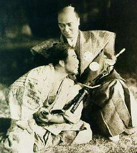

Борис Акунин
Мой календарь
Сегодня опять про японцев. Про качество, которое во всех странах считается просто похвальным, а в Японии - главным.
Отмечаем День Верности, потому что 20 марта чтут память 47 верных вассалов. Это самый знаменитый сюжет японской культуры, вдохновивший бог знает сколько художников, драматургов, литераторов и кинематографистов.
История с западной точки зрения экзотическая, даже нелепая. В 1701 году один князь, будучи в столице, поссорился с важным вельможей, который повел себя грубо. Оскорбившись, князь схватился за меч. Обнажать оружие в сёгунском дворце считалось преступлением, которое каралось смертью. Вспыльчивому молодому человеку приказали совершить харакири, а его клан упразднили. Все самураи лишились службы, то есть превратились в ронинов.
Сорок семь человек поклялись отомстить за своего господина, хотя отлично знали, что это будет стоить им жизни.
Преодолев множество препятствий, проявив чудеса выдержки и хитрости, они в конце концов осуществили свое намерение: ворвались в усадьбу обидчика, перебили охрану и учтиво предложили вельможе, чтобы он тоже взрезал себе живот. Хозяин от любезного приглашения отказался, и тогда ронины его прикончили.
Время было ночное, никто не мешал заговорщикам скрыться. Но убегают виновные, ронины же считали, что поступили по самурайскому канону: продемонстрировали верность своему покойному господину.
Того же мнения был и суд. Поступок верных вассалов у всех вызывал восхищение. В результате 47 ронинов, в знак уважения, были приговорены не к казни, а к благородному самоубийству.
20 марта 1703 года сорок семь самураев совершили харакири и заняли почетное место в пантеоне японских национальных героев.
Взрезать себе живот, конечно, лишнее. Но безоговорочная, ни перед чем не пасующая верность - это очень красиво.